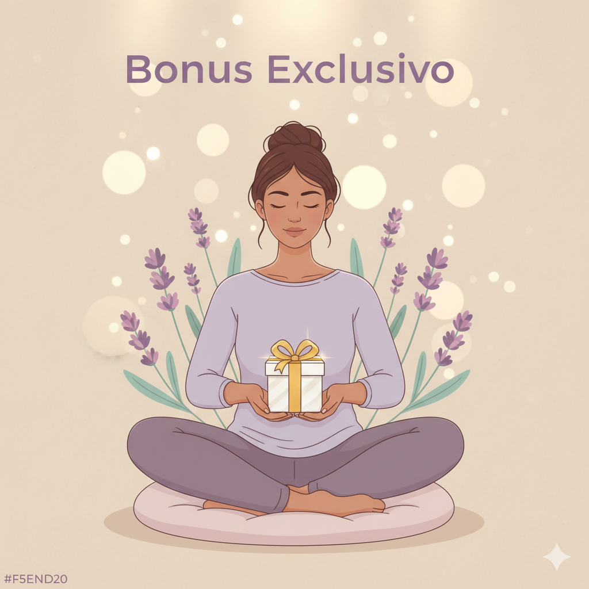

1. ¿Te sientes solo/a a pesar de tener gente a tu alrededor?
2. ¿Sientes que no tienes con quién hablar de tus preocupaciones?
3. ¿Te cuesta disfrutar de tu propia compañía?
4. ¿Sueles ocultar tus emociones por miedo a ser juzgado/a?
💡
Acciones Diarias
Pequeños ejercicios de 5 minutos que puedes hacer en cualquier momento del día.
🧘
Apoyo Emocional
Consejos reales para afrontar los momentos de vacío y fortalecer tu autoestima.
🔊
Audio Calmante
Incluye un audio de acompañamiento de 3 minutos para calmar la mente cuando lo necesites.
🌍
Conexión Real
Estrategias para conectar con personas y actividades auténticas, más allá de las redes sociales.
Bonus Exclusivo
Al adquirir la guía, obtienes un audio guiado de 3 minutos diseñado para ayudarte en los momentos más difíciles. Simplemente presiona play, cierra los ojos y deja que la calma llegue a ti.
¡Es como tener una mano amiga siempre a tu lado!

Precio Accesible
Todo el contenido por solo $5 USD. Menos de lo que gastas en un café, pero con resultados que ya están transformando la vida de quienes lo aplican.